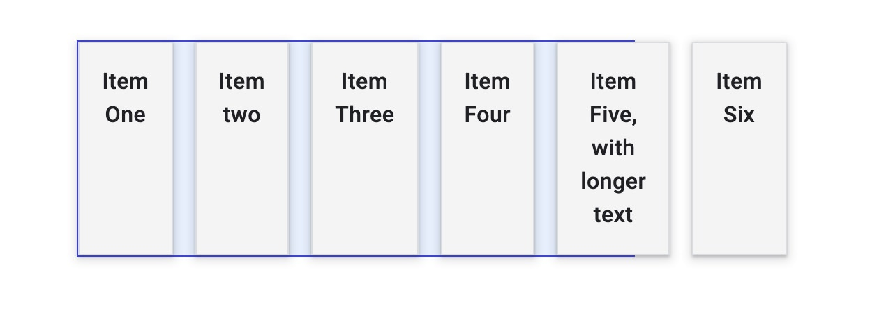
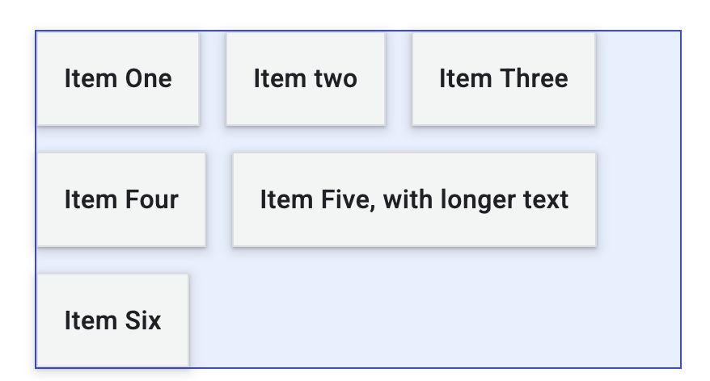
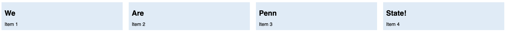
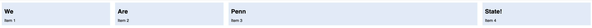
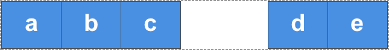

Recap from last class
- Box model
- Layout flow
- Float
- Positioning
- Flexbox
Everything displayed in
CSS is a box!
The Box Model
- Each element has a rectangular box
- text
- elements that looks circular
How does the box model work?
It is all box stacking
Block boxes
<h1>, <p>, …
- The box will break into a new line
- If width is not specified
- will use up available space within parent
Inline boxes
<span>, <a>,
…
- The box will not break into a new line
width and height can’t be set- If there is no space, then the overflow will continue to a new
line
Inline Block
boxes
- The box will not break into a new line
- But, you can set
width and height
Box model areas

Controlling the box areas
height and width
padding and border
- adds to
content box sizes
margin does not count to box size
What’s the total height
and width here?
.box {
width: 350px;
height: 150px;
margin: 10px;
padding: 25px;
border: 5px solid black;
}
What’s the total height
and width here?
.box {
width: 350px;
height: 150px;
margin: 10px;
padding: 25px;
border: 5px solid black;
}
- Width: 410px
- Height: 210px
This default rule is 👎🏾
Inconvenient
to add padding and border to get actual box size
Alternative box model
box-sizing: border-box;
- Height and width applies to the box
- Border and padding get pushed in
- content = box - (border + height)
- More predictable
What’s the total height
and width here?
.box {
box-sizing: border-box;
width: 350px;
height: 150px;
margin: 10px;
padding: 25px;
border: 5px solid black;
}
- Width = 350px
- Height = 150px
Alternative box model is
more common
html {
box-sizing: border-box;
}
*,
*::before,
*::after {
box-sizing: inherit;
}
Recap from last class
- Box model
- Layout flow
- Float
- Positioning
- Flexbox
Float
- Takes an element out of the normal box stacking flow
- Places it left or right side of the parent
- Other inline elements will “float” (“wrap”) around it
- Mostly for image and text
Recap from last class
- Box model
- Layout flow
- Float
- Positioning
- Flexbox
Positioning
- Mostly for elements out of the normal flow. E.g.,
- Adding a caption on top of an image
- Fixed tab header
- Image that overlays over other elements
- Options
- static (default), absolute, fixed, sticky
Relative
Position
- Element placed following the normal flow
- You can move the final position
top, bottom, left,
right values
Absolute
Position
- Element moves out of the normal flow
- Sits on a separate flow
- great for isolated UI features
top, bottom, left,
right values
- placement within the
container element
Absolute
Position
What’s the container element
- Any ancestor element with their
position explicitly defined
- Default is the
<html> element
Fixed
Position
Fixed in relation to the
viewport
- Persistent element always visible
Recap from last class
- Box model
- Layout flow
- Float
- Positioning
- Flexbox
Flexible Box Layout model
Modern approach to layout
section {
display: flex;
}
Flexbox
- Single dimension layout
- Arrange items in rows or columns
Flex model
- Main axis
- Direction of how items are laid out
- row or column
- Cross axis
- Parent element
Main axis direction
Default is row
/* Set main axis to column */
flex-direction: column;
Wrapping
Items overflow by default

Not good for most cases
Wrapping to next line
flex-wrap: wrap;
Default

flex-wrap: wrap;
flex-flow shorthand
flex-direction: row;
flex-wrap: wrap;
=
Flexible sizing of items
A key advantage!
Flexible sizing of items
flex: proportion
values
- How much available space an item will take
- compared to other flex items
- along the main axis
Flexible sizing of items
Allows setting minimum sizes
/* at least 100 px */
flex: 1 100px;
flex: auto
- Absorbs available space
- Shrinks to minimum size when necessary
Todo from last class
- In Activity-04
- Make Penn take 1/3 of
all space
- Each item should be at least 150px wide
Todo from last class

Current

Expected
Two steps
article {
flex: 1 150px;
}
Set minimum width for all
article:nth-of-type(3) {
flex: 3 150px;
}
Update flex for 3rd item
Today
- Aligning flex items
- Chrome Dev Tool for flexbox
Aligning flex items
Across cross or main axis
Aligning flex items on cross
axis
align-items
applies to all flex items as a group
stretch: fills the parent
center: centers the items
Other options
flex-start, flex-end, start,
end, …
Todo
- Go here
- Update
align-items
stretch, center, start, and
end
- Now set
flow-direction to be column
- Update
align-items as before
- What changes? Why?
Aligning one item
align-self
align-self applies to a single item
- values similar to
align-items
stretch, center, start,
end, …
Todo
Go here
Align “Four” to the end
Change flex-direction to column. What
happens?
Wrapping
Distribution of space
between lines
align-content determines space between
flex lines- Only applicable when
wrapping happens
- Options
space-between, space-around,
space-evenly, center, start,
…- See here
Todo
Go here
Update align-content:
center, end,
space-around
Aligning flex items
Across cross or main axis
Aligning flex items on main
axis
justify-content
- Similar to
align-content
- for space distribution across main
axis
- same values
Todo
- Go here
- Update
justify-content
start, end, center,
space-around
Gaps between rows and
columns
gap property:
row-gap column-gap
section {
display: flex;
flex-flow: row wrap;
align-items: center;
gap: 10px 35px;
justify-content: space-between;
height: 600px;
}
- row gap: 10px
- column gap: 35px
auto margins
for main axis alignment
auto margin takes up as
much space as possible- you can use it to group elements
auto
margins for main axis alignment

margin-left: auto for
d
Flexbox alignment summary
align-items
- all items as a group on the cross axis
align-self
- a single item on the cross axis
align-content
- space distribution on the cross axis
justify-content
- space distribution on the main axis
Todo
- Go to Flexbox Froggy
- Work with your group to complete the levels
- Feel free to use LLM as well
Today
- Aligning flex items
- Chrome Dev Tool for
flexbox
Todo
- Open Activity
04 in Chrome
- Open Flexbox editor and change:
flex-direction to columnflex-wrap to wrapalign-content to flex-end and
center